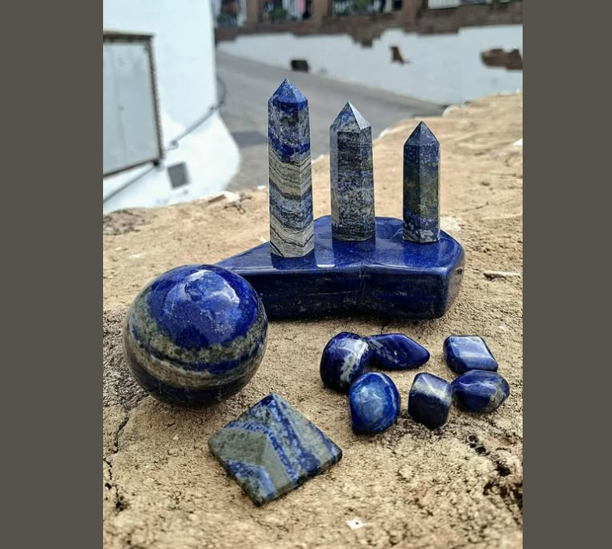

MAGÍSTER EN CIENCIAS DEL DISEÑO · COMPUTACIÓN AVANZADA
Valeska López Sepúlveda
Administración Pública · Diseño · Exploración computacional
Perfil
Disciplina / formación: Administración Pública.
Qué hago hoy: Trabajo, vida familiar y estudios.
Qué me gustaría aprender en este curso: Entender este mundo de la programación y explorar cómo puede aportar al diseño.
Intereses
- Compras públicas
- Planificación estratégica
- Diseño
Una pregunta que me interesa explorar
¿Cómo se comportan los materiales y de qué manera su comportamiento puede abrir nuevas posibilidades de diseño?
Algo que me inspira
El desafío que produce el desconocimiento técnico en las licitaciones públicas y la posibilidad de conectar conocimiento técnico, gestión y diseño.

Modelo 3D
Modelo 3D incorporado al portafolio del curso para su visualización interactiva directamente en el navegador.
LAB02
Campo Generativo 01
Campo generativo interactivo desarrollado para Computación Avanzada. Las esferas responden a parámetros del sistema, incorporan un efecto de rebote y reaccionan al acercamiento del cursor.
LAB03
Campo de Datos 01
Representación interactiva de un sistema de bicicletas compartidas a partir de datos GBFS. La capacidad controla la altura total, las bicicletas disponibles el volumen interior y la proporción de anclajes libres controla el ancho de cada estación.
Enlaces
Declaración de uso de IA
Este repositorio utiliza ChatGPT como copiloto de apoyo para programación, revisión y documentación del trabajo del curso. Las decisiones de contenido y diseño corresponden a la autora. El registro de uso se mantiene en AI_USAGE.md.